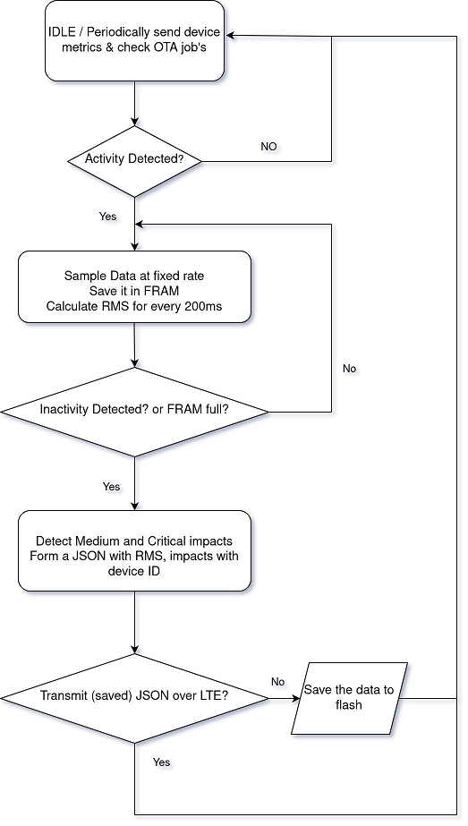

System Overview
AXO X1 devices will be placed at railway track switches to record vibration over defined thresholds to predict upcoming disturbances of the track switch.
Because the battery lifetime shall be more the 5 years the system must be in a low power idle mode. There are only two scenarios to wakeup the system:
- Cyclic connection to the backend by sending metrics updates (device health data)
- Acceleration goes above activity threshold
Data Measurement
- Measurement of accelerations on switches (x/y/z)
- Automatic calculation of RMS data from the raw accelerator data
- Shock detection: Automatic calculation of medium and critical hits from the raw accelerator data
- Immediately transfer of the RMS and hit data to the backend
Normal Operation
In normal operation the expected behaviour should be:
- Device is idle, waiting for motion. In idle state the device should be in its lowest power consumption state.
- If motion is detected (level of vibration detected by the accelerometer is above the activity threshold), start sampling data.
- Sample data at predefined, fixed data rate, save raw data locally. Do it for as long as there is motion (level of vibration detected by the accelerometer is below the inactivity threshold) or as long as there’s storage capacity (defined by the FRAM present in hardware).
- Perform appropriate conversions to calculate the RMS value of the sampled raw dataset and impact detection (according to system requirements). The values should be calculated for periods of 1000 ms.
- The impact detection will be an information of how many medium and critical impacts (definition above) happened for each period of RMS calculation.
- Send the calculated RMS and detected impacts to the backend through LTE-M.
- If transmission succeeded, go back to idle state and repeat the steps.
- Periodically (this period should be a fixed configuration) the device should connect to the network regardless if there’s acceleration data to be sent, to update device metrics which include information such as the device's battery level, signal strength, temperature, humidity, and other relevant parameters. This periodic connection should allow the device to update certain configuration parameters such as activity and inactivity thresholds and to check if there’s any queued OTA jobs.
- In case there’s an OTA job to be performed, this should start immediately.

FirmwareUpdate
Firmware update over the air (OTA) shall be possible at any time of the systems life cycle:
- Firmware can be updated over the air; can be triggered via the backend
- In case the new firmware does not work realiably there shall be a rollback mechanism to old version